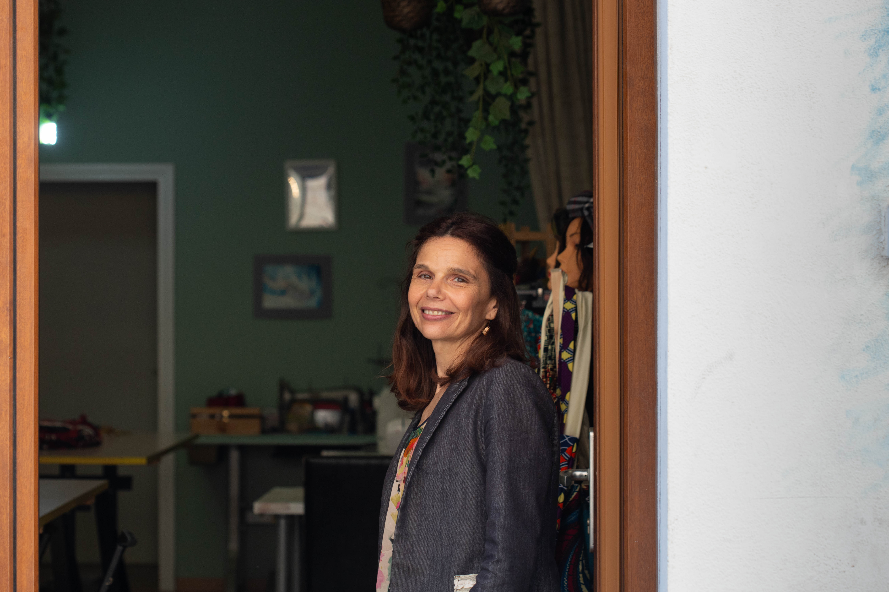

antivento
Sono Claudia Gugnelli fondatrice di Arti in Cantiere.
La passione per la sartoria e le arti manuali mi accompagna da sempre — ma ha radici più lontane di me. Le mie prozie erano ricamatrici, figure conosciute a Rimini per la loro maestria. Da loro ho ereditato il rispetto per il lavoro fatto con le mani, la cura per i dettagli, il piacere di trasformare un tessuto in qualcosa di unico.
Nel tempo ho fatto mia quella passione, reinterpretandola a modo mio: creo, sperimento, cerco tagli e accostamenti nuovi. Lo faccio per me, e lo faccio per chi desidera qualcosa di realizzato con attenzione e cura.
In questa pagina trovi alcune delle mie creazioni — abiti, accessori, sperimentazioni. Ogni pezzo nasce da un'idea e da tanta voglia di fare.

antivento

astucci in tessuto wax

astuccio wax

fascia invernale

fascia invernale uncinetto

fascia invernale velluto

giacca wax per laurea_n

blusa wax

borsa naif

borsa per il pranzo

camicia in tessuto wax del Ghana

cappellino alla pescatora 2

cappellino alla pescatora

casacca uono wax

completo blusa e gonna in tessuto wax per cerimonia

cuffia da infermiera

gonna a palloncino

gonna a pieghe

gonna a portafoglia e blusa a righe

gonna a portafoglio

gonna con baschina

gonna con tessuto wax

gonna wax

kimono estivo

antivento wax

pochette a tracolla

pochette in tessuto giaponese 2

pochette in tessuto giapponese

porta tappetino joga

porta trucchi

sacca tappettino joga

sacca zaino aironi

sacca zaino animali

sacca zaino animal

sacca zaino marinara

sacca zaino mondo

sacca zaino tram

sacca zaino valige

sacca zaino vintage

sacca zaino wax

salopette bimba

salopette bimbo 1 anno

salopette bimbo di 1 anno

salopette bimo 1 anno fiori

shopper

shopper wax

tovagliette

vestitino bimba di 1 anno

vestito anni '50

vestito con scollo anni '50

vestito con tessuto senegalese

vestito con tessuto wax e scollo anni 50

vestito cosplay per jessica

vestito da damigella

vestito in tessuto wax e giallo ocra

vestito pre mamam

zaino con animali

zaino con animali retro

zaino con ginco biloba

zaino con Onda di Hokusai

zaino con onda di okusai fronte

zaino Foresta naif

zaino foresta naif retro

zaino in tessuto panama

zaino in tessuto wax

zaino tessuto wax